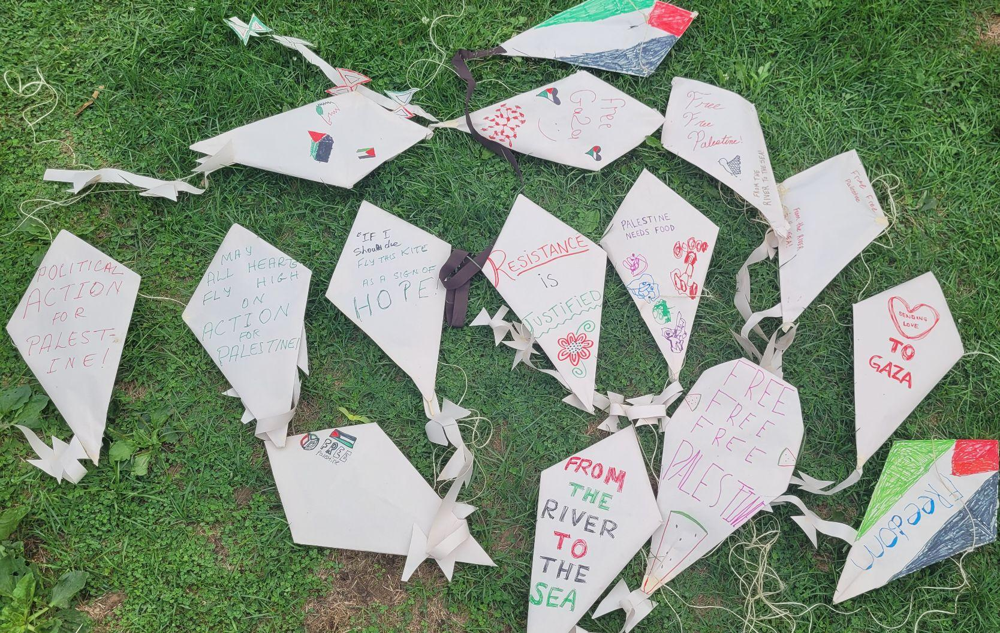
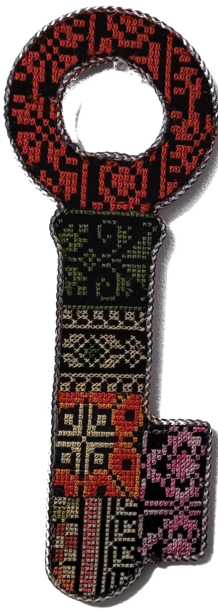
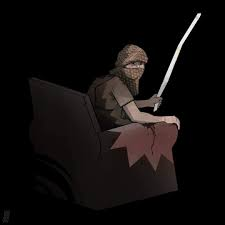

Gabriel Gebril
[Before] Palestinians can live in a free Palestine, they have to create a free Palestine in their imagination through stories, films, novels, and the arts (Alareer & Abulhawa, 2024, p. xviii).
The Algerian’s criminality, his impulsivity, and the violence of his murders are therefore not the consequence of the organization of his nervous system or of characterial originality, but the direct product of the colonial situation (Fanon, 2002).
The Kite, The Key
 
The Stick, The Gun
